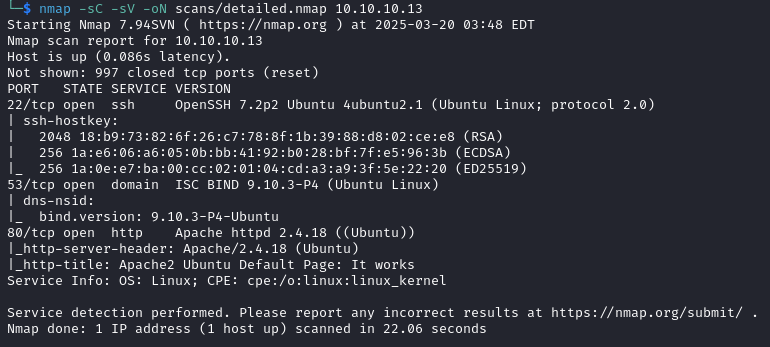
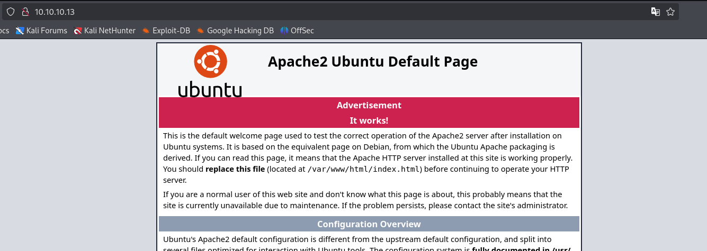
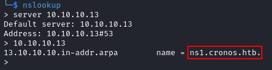
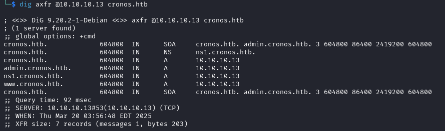
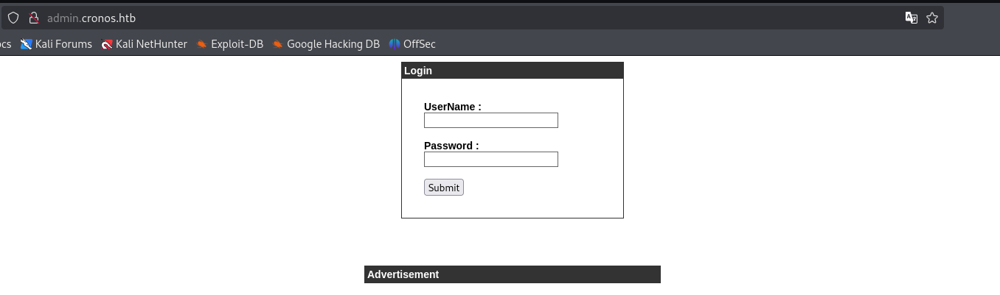

Enumeration
Scan
Starting off with a basic nmap scan:
nmap -sC -sV -oN scans/detailed.nmap 10.10.10.13
Web
Port 80 is always a great place to start looking, but navigating to the website just shows a default Apache page. 
DNS
Let’s see if we can pull some more useful information from the DNS server.
Using nslookup, find out the name of the nameserver:
$ nslookup > server 10.10.10.13 > 10.10.10.13
Now, we can use dig to perform a zone transfer and look for subdomains.
For those of you new to this topic, dig is the “Domain Information Grouper”, which is a command-line tool for querying DNS servers. Using the axfr (Authoritative Transfer) query type requests a full DNS zone transfer. This functionality is meant for replicating DNS records between servers, but we are using it here to learn more about our target.
dig axfr @10.10.10.13 cronos.htb
Web (Again)
“admin.cronos.htb” looks the most interesting, so let’s take a look after adding it to /etc/hosts
